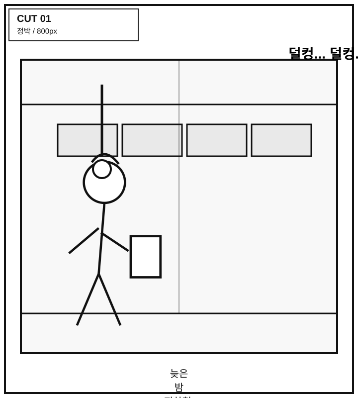
늦은 밤 지하철, 서윤 전신
서윤은 화면 왼쪽 1/3. 오른쪽은 빈 좌석과 반복되는 손잡이.
효과음/텍스트: 덜컹... 덜컹...
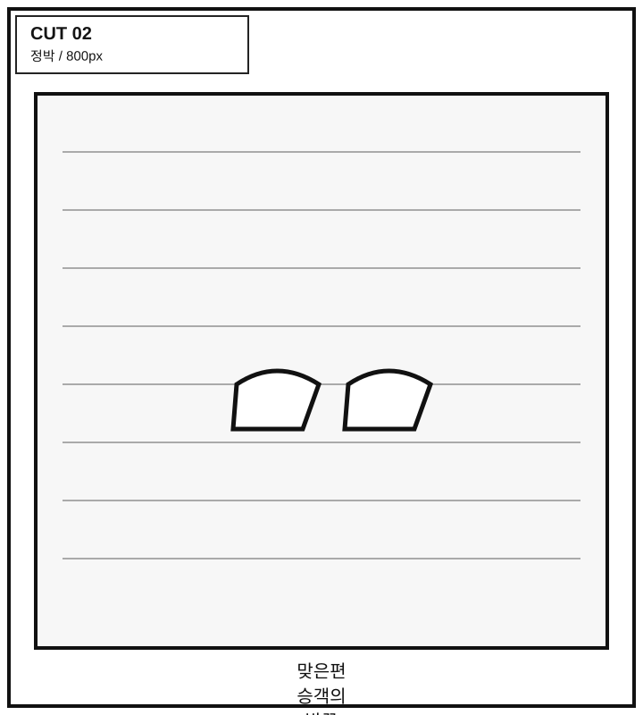
맞은편 승객의 발끝
낮은 앵글. 발끝과 바닥 패턴만 보이게 평범함 유지.
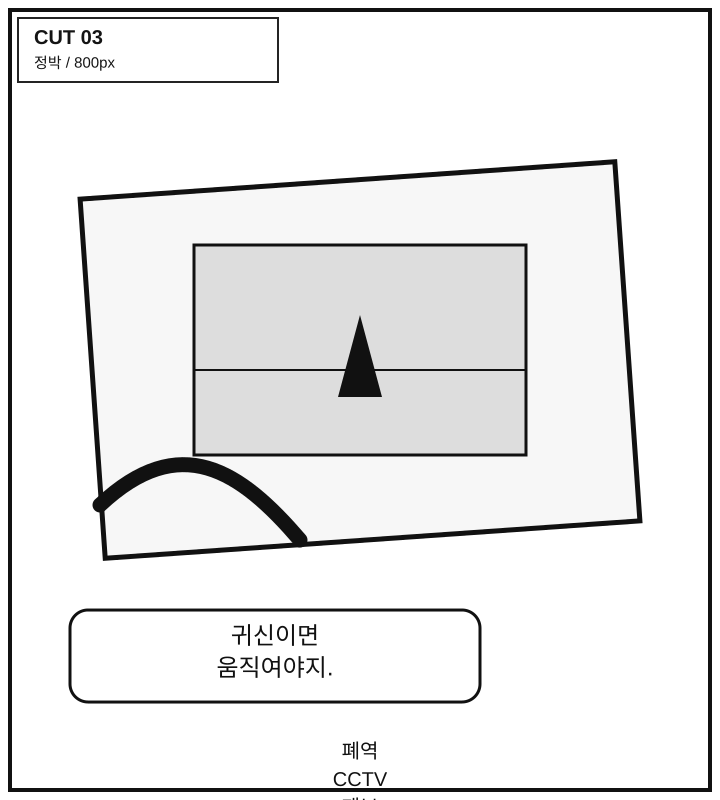
폐역 CCTV 제보 사진
손과 사진 클로즈업. 사진 속 작은 여자 형체는 작지만 선명.
대사: 귀신이면 움직여야지.
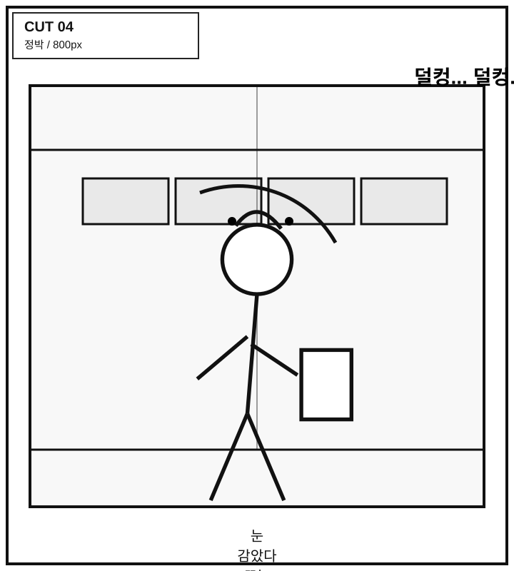
눈 감았다 뜨는 서윤
손잡이를 쥔 손가락에 힘. 표정은 피곤하고 예민.
효과음/텍스트: 덜컹... 덜컹...
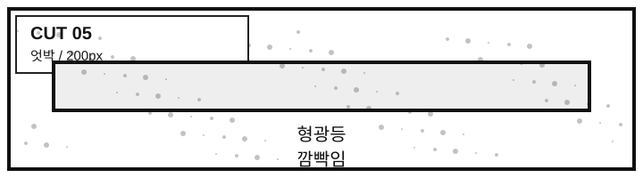
형광등 깜빡임
얇은 컷. 화면 전체에 약한 화이트 노이즈.
블랙 여백
완전한 검정. 독자가 스크롤을 내리며 불편함을 느끼는 호흡 정지.
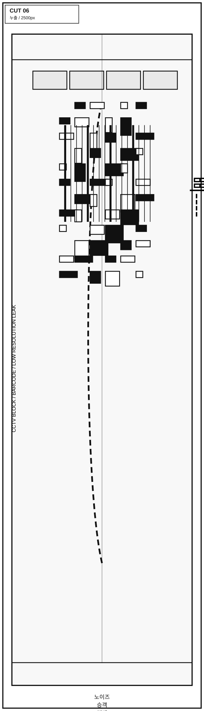
노이즈 승객 거대 컷
중앙의 사람 윤곽이 상단으로 갈수록 바코드, 픽셀, CCTV 블록으로 붕괴.
효과음/텍스트: 삐----
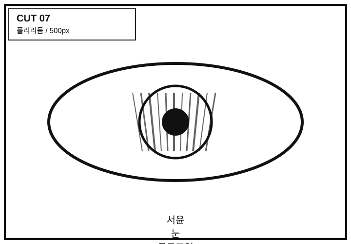
서윤 눈 클로즈업
비명보다 관찰. 눈동자 안에 바코드 같은 선 반사.
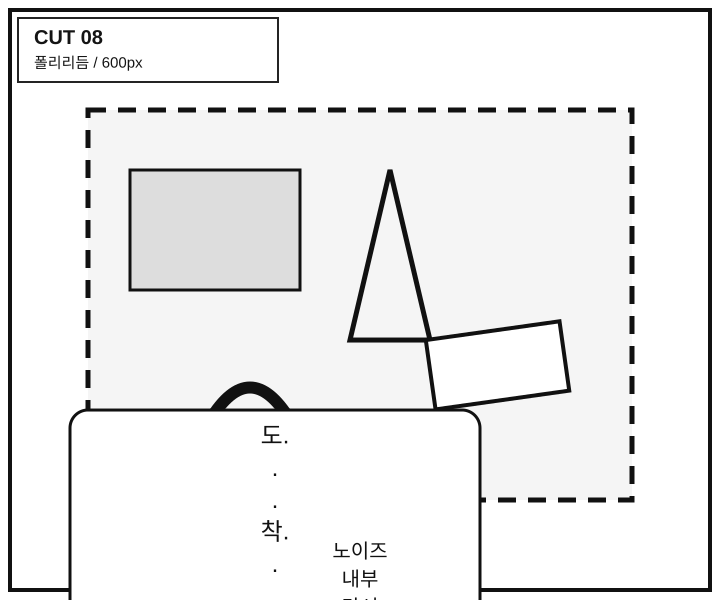
노이즈 내부 단서
폐역 승강장, 젖은 교복, 찢어진 승차권, 어린아이 손이 겹쳐 보임.
대사: 도...착...
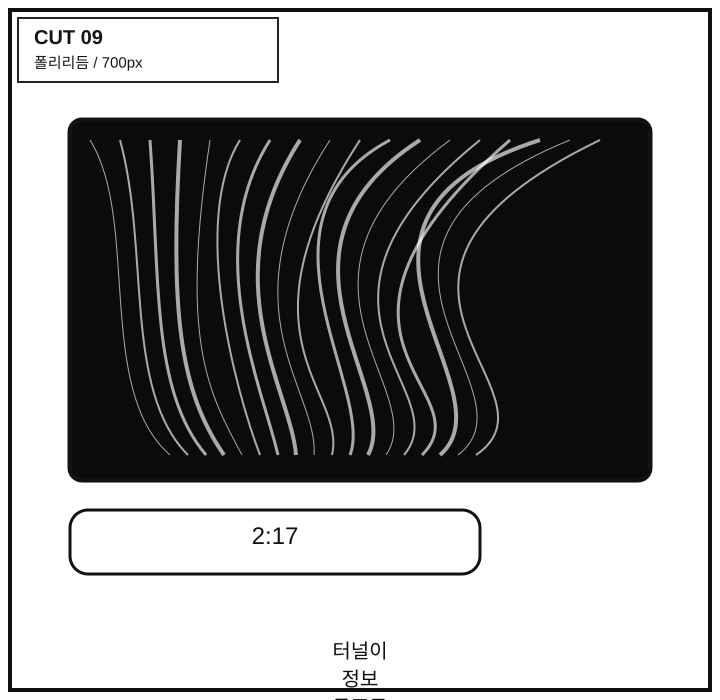
터널이 정보 구조로 변함
창밖 검은 터널이 부적 단면 같은 정보 구조로 가득함.
대사: 2:17
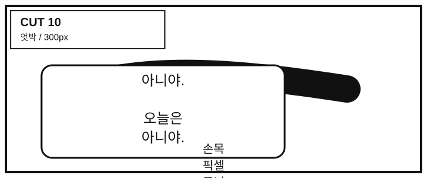
손목 픽셀 무늬
서윤이 손목을 움켜쥔다. 오래된 상처처럼 픽셀 무늬가 잠깐 뜸.
대사: 아니야. 오늘은 아니야.
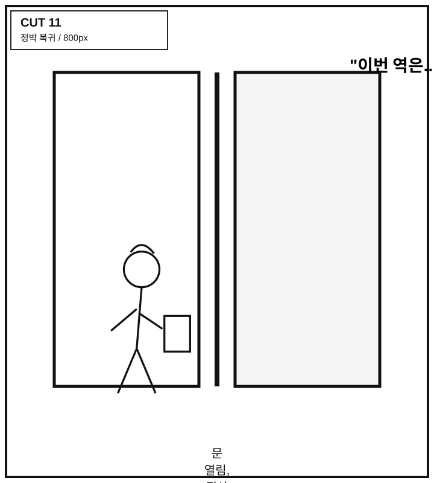
문 열림, 정상 안내방송
문틈과 서윤 옆얼굴. 바깥 플랫폼은 평범함.
효과음/텍스트: "이번 역은..."
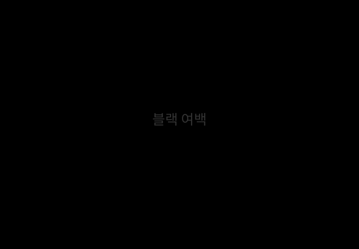
블랙 여백
정상으로 돌아온 듯하지만 안심하지 못하게 하는 짧은 숨.
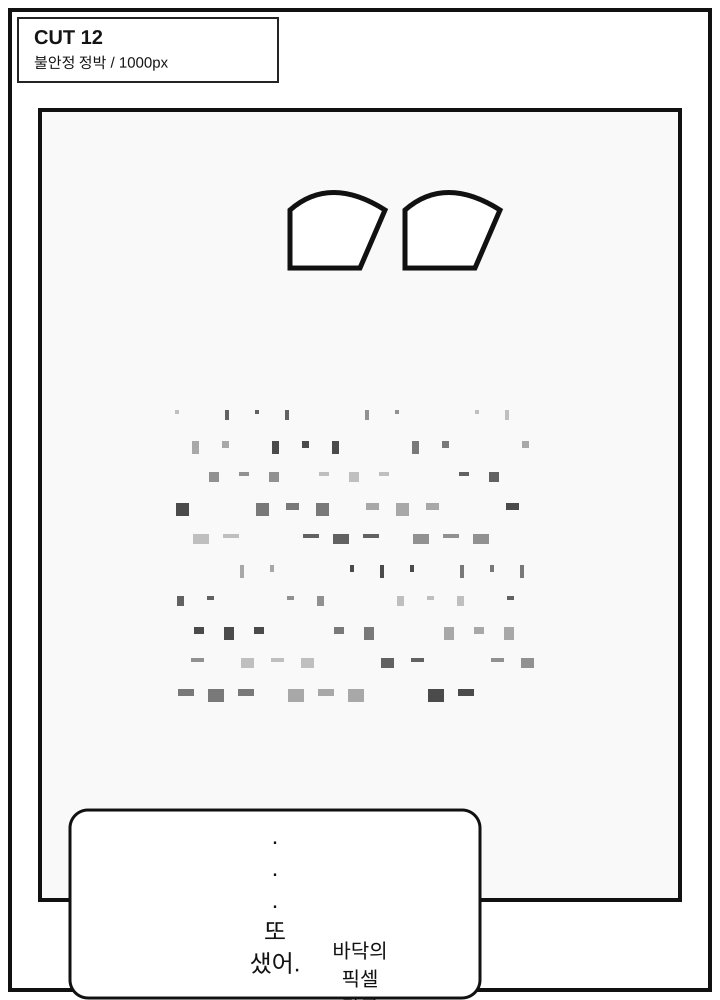
바닥의 픽셀 가루
서윤이 내리려는 발밑. 픽셀 가루가 바닥에 흩어져 스며듦.
대사: ...또 샜어.
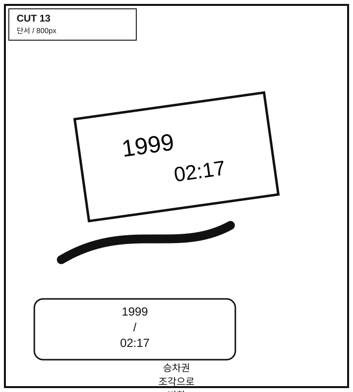
승차권 조각으로 변함
픽셀 가루가 낡은 승차권 조각으로 변함. 서윤은 즉시 봉투에 넣음.
대사: 1999 / 02:17
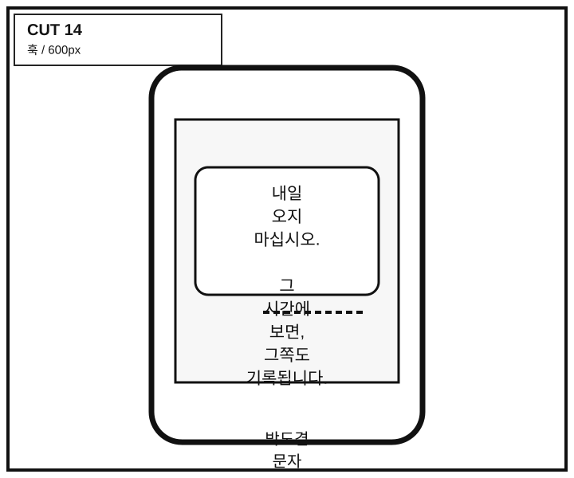
박도겸 문자
휴대폰 화면 클로즈업. 마지막 문장만 살짝 노이즈 처리.
대사: 내일 오지 마십시오. 그 시간에 보면, 그쪽도 기록됩니다.